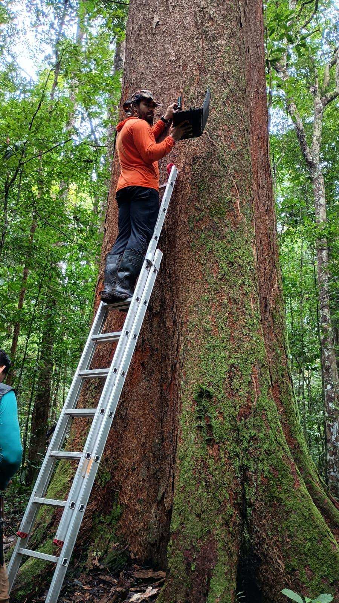
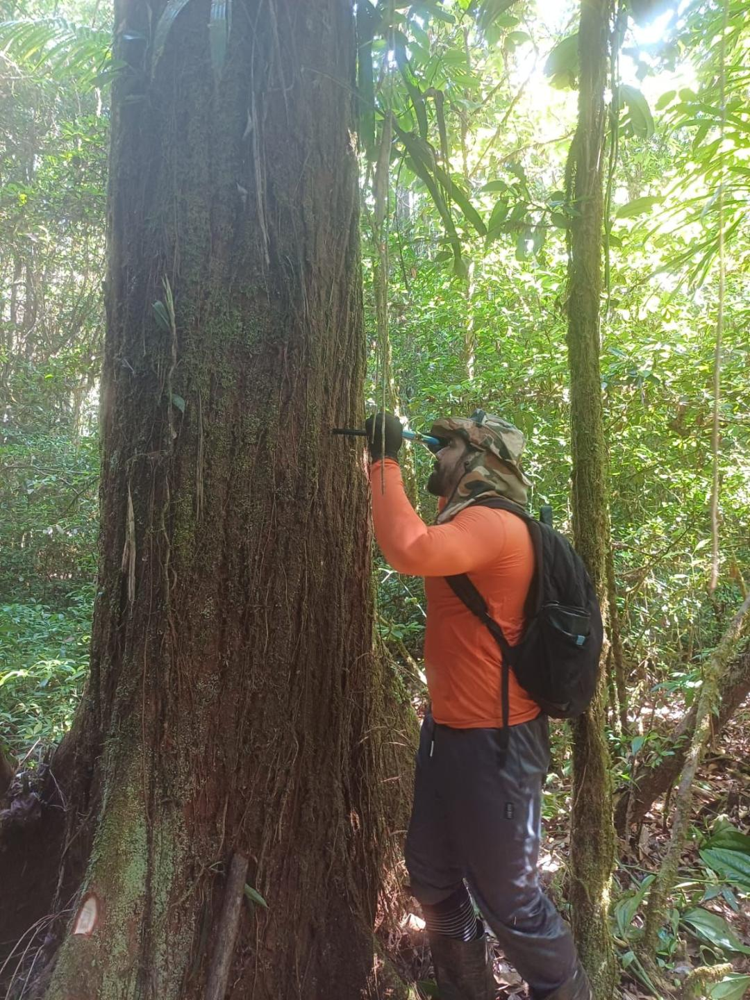
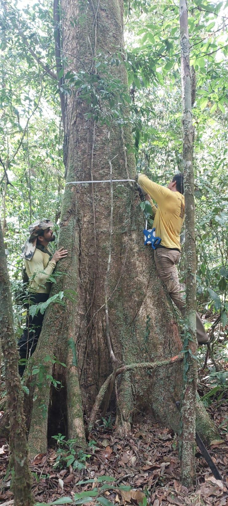

SCIENTIFIC COORDINATOR
Robson Borges de Lima, PhD
Forest Biometrician · Tropical Forest Ecologist · Spatial Ecology · Remote Sensing · Giant Amazon Trees
ABOUT
Research profile
I am an Associate Professor at the State University of Amapá (UEAP), Brazil, and a CNPq Productivity Fellow (Level 2), leading the Plant-Climate Interaction Laboratory within the Forest Engineering Department.
My research lies at the interface between tropical forest ecology, forest biometrics, statistical ecology, spatial modeling and remote sensing, with a particular focus on understanding how environmental gradients and climate change shape the structure, functioning and resilience of tropical forests.
I am especially interested in the ecological role of giant tropical trees, biodiversity patterns, forest biomass dynamics and ecosystem resilience under increasing climatic stress. My work combines forest inventory, functional ecology, machine learning, airborne LiDAR, satellite remote sensing, R programming and advanced statistical modeling to understand ecological processes across multiple spatial scales.
SCIENTIFIC APPROACH
Field ecology, quantitative methods and spatial science
Through my research group, we integrate forest biometrics, functional ecology, climate science and spatial ecology to investigate how forests respond to environmental change and how these responses can inform sustainable forest management, biodiversity conservation and climate mitigation strategies.
Over the course of my scientific career, I have worked extensively on connecting field-based ecology with geospatial technologies, developing methods for mapping forest structure, carbon stocks, biodiversity and ecological resilience in tropical ecosystems. A major focus of my work has been the development of spatial ecological models and predictive frameworks to identify vulnerable ecosystems, giant-tree hotspots and potential ecological refugia under future climate scenarios.
I am also committed to mentoring students and early-career researchers, particularly from underrepresented regions of the Global South, helping build scientific capacity in tropical ecology, forest monitoring, environmental statistics and data science.
RESEARCH INTERESTS
Expertise
FIELDWORK
Amazon giant forests in practice




CONTACT
Get in touch
If you are interested in collaborating, discussing research opportunities or joining our scientific network, please feel free to contact me.
Institutional email: robson.lima@ueap.edu.br
Alternative emails: robson.lima.ef@gmail.com; rbl_florestal@yahoo.com.br